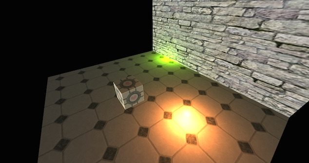

This is a test I did over the winter holidays in which I setup a simple scene using Three.js and played with a shader to calculate a directional light and two point lights for the scene.
A series of small tests, ranging from the simple to the complex, in which I explore different shader tehnicues.

The demo starts out as a simple example of a scene rendered using solid colors. Then, using examples from http://ogldev.atspace.co.uk/www/tutorial17/tutorial17.html and http://ogldev.atspace.co.uk/www/tutorial20/tutorial20.html it advances to include more complicated topics such as directional light, texture, point and spot light, shadow, bumb mapping, etc.